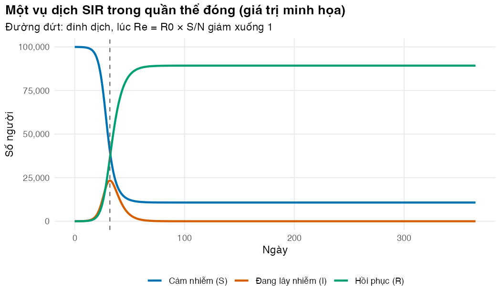
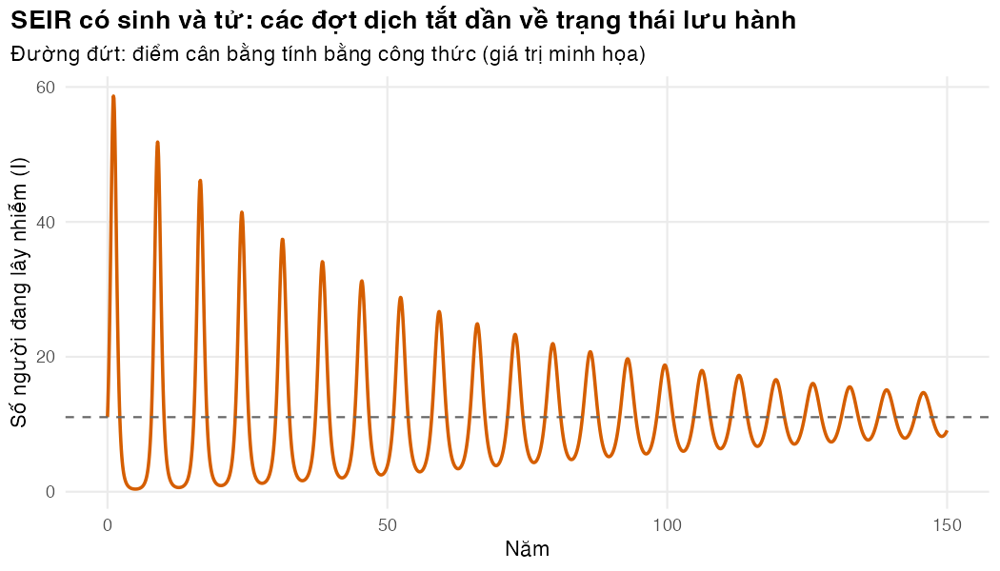

Viết phương trình vi phân thành hàm R, giải bằng deSolve và kiểm tra kết quả bằng những điều ta biết chắc
Vì sao bạn nên quan tâm?
Đầu tháng 6, trung tâm kiểm soát bệnh tật (CDC) của một tỉnh phải báo cho bệnh viện tỉnh khi nào số ca sốt xuất huyết lên đỉnh và cần kê thêm bao nhiêu giường. Năm 2025 cả nước báo cáo 190,040 ca (Báo Pháp luật Việt Nam 2026); một ngày giường khoa Truyền nhiễm ở bệnh viện hạng đặc biệt được BHYT tính 327,100 VNĐ, khoảng 8 bát phở (Bộ Y tế 2024; Nhadautu.vn 2025). Dự báo ấy đến từ một hệ phương trình vi phân; giải sai, hoặc trộn ngày với năm, là lệch đỉnh dịch và lệch cả số giường. Bài này giúp bạn viết, giải và kiểm tra một mô hình động trước khi tin vào con số nó đưa ra.
Mục tiêu học tập
Sau bài này, bạn có thể:
Viết hệ phương trình vi phân thường (ODE) của mô hình SIR và SEIR thành một hàm R đúng chuẩn của deSolve.
Giải hệ bằng deSolve::ode() (thuật toán lsoda) và đọc kết quả dưới dạng bảng.
Kiểm tra mô hình bằng bốn phép thử: bảo toàn dân số, không âm, kích thước cuối (final size) của vụ dịch, đỉnh dịch tại \(R_e = 1\).
Tính điểm cân bằng lưu hành của mô hình SEIR có sinh và tử bằng công thức, rồi đối chiếu với lời giải số.
Ý chính
Mô hình ngăn (compartmental model) chia quần thể thành các ngăn S, E, I, R. Mỗi mũi tên giữa hai ngăn là một dòng chảy bằng tỷ suất nhân với số người trong ngăn nguồn.
Hàm cho deSolve có dạng function(t, y, parms) và trả về list(đạo hàm, ...). Thứ tự đạo hàm phải khớp thứ tự của y.
Dùng một đơn vị thời gian duy nhất trong mọi phương trình (ở module này là ngày). Đổi đơn vị ở một chỗ, trước khi giải.
Ba kiểm tra tối thiểu: tổng các ngăn bằng \(N\); không ngăn nào âm; kết quả khớp một lời giải giải tích đã biết.
Không có sinh và tử, dịch bùng lên rồi tắt; đỉnh dịch xảy ra khi \(R_e = R_0 S/N\) giảm xuống 1.
Có sinh và tử, bệnh trở thành lưu hành. Ở điểm cân bằng, \(S^*/N = 1/R_0\) và lực lây nhiễm \(\lambda^* = \mu(R_0 - 1)\). Tuổi trung bình của những người thực sự bị nhiễm là \(L/R_0\); còn \(1/\lambda^* = L/(R_0-1)\) là thời gian chờ nhiễm nếu không ai chết trước, chỉ xấp xỉ \(L/R_0\) khi \(R_0\) lớn.
Bộ giải bước thích nghi (lsoda) chính xác hơn nhiều so với vòng lặp Euler bước cố định.
Nội dung
Từ sơ đồ ngăn đến phương trình
flowchart LR B(("Sinh μN")) --> S["S: cảm nhiễm"] S -->|"λ S, với λ = β I / N"| E["E: tiềm ẩn"] E -->|"σ E"| I["I: đang lây nhiễm"] I -->|"γ I"| R["R: hồi phục"] S -.->|"μ S"| D(("Tử vong")) E -.->|"μ E"| D I -.->|"μ I"| D R -.->|"μ R"| D
flowchart LR
B(("Sinh μN")) --> S["S: cảm nhiễm"]
S -->|"λ S, với λ = β I / N"| E["E: tiềm ẩn"]
E -->|"σ E"| I["I: đang lây nhiễm"]
I -->|"γ I"| R["R: hồi phục"]
S -.->|"μ S"| D(("Tử vong"))
E -.->|"μ E"| D
I -.->|"μ I"| D
R -.->|"μ R"| D
Mỗi mũi tên là một số hạng trong phương trình: dòng ra mang dấu trừ ở ngăn nguồn, dòng vào mang dấu cộng ở ngăn đích. Với mô hình SEIR có sinh và tử (số sinh bằng số tử nên \(N\) không đổi):
\[
\begin{aligned}
\frac{dS}{dt} &= \mu N - \lambda S - \mu S, &\quad \lambda &= \beta I/N,\\
\frac{dE}{dt} &= \lambda S - (\sigma + \mu) E, &\quad \frac{dI}{dt} &= \sigma E - (\gamma + \mu) I,\\
\frac{dR}{dt} &= \gamma I - \mu R .
\end{aligned}
\]
\(1/\sigma\) là giai đoạn tiềm ẩn (latent period: đã nhiễm nhưng chưa lây; ở mô hình dengue Bài 4 nó trùng với thời gian ủ bệnh nội tại), \(1/\gamma\) là thời gian lây nhiễm, \(1/\mu\) là tuổi thọ trung bình. Mô hình SIR là trường hợp không có ngăn E. Đặt \(\mu = 0\) ta có một vụ dịch trong quần thể đóng. Khác với mô hình Markov ở M02, thời gian ở đây liên tục; không có chu kỳ, không cần hiệu chỉnh nửa chu kỳ.
Với SEIR có sinh và tử, một ca nhiễm phải sống qua giai đoạn tiềm ẩn (xác suất \(\sigma/(\sigma+\mu)\)) rồi lây trong thời gian trung bình \(1/(\gamma+\mu)\), nên
Gói deSolve(Soetaert, Petzoldt, và Setzer 2010) nhận bốn thứ: trạng thái ban đầu y, vectơ thời điểm cần xuất kết quả times, hàm vế phải func và danh sách tham số parms. Thuật toán mặc định lsoda tự chọn độ dài bước và tự chuyển cách giải khi hệ trở nên “cứng” (stiff). Các thời điểm trong times chỉ là nơi ghi kết quả, không phải độ dài bước tính. Trong code/model.R, hàm run_ode() gói lời gọi này và trả về một data.frame. Các giá trị phụ như foi (lực lây nhiễm, force of infection) và N được trả về kèm, rất tiện cho kiểm tra.
Điểm cân bằng lưu hành
Đặt mọi đạo hàm bằng 0 sẽ có điểm cân bằng lưu hành (endemic equilibrium) khi \(R_0 > 1\):
Từ đó, lực lây nhiễm ở trạng thái cân bằng là \(\lambda^* = \mu (R_0 - 1)\). Hai đại lượng về tuổi nhiễm rất hay bị nhầm. Đặt \(L = 1/\mu\). Đại lượng \(1/\lambda^* = L/(R_0 - 1)\) là thời gian chờ nhiễm nếu không ai chết trước khi bị nhiễm. Trong mô hình này tử vong không đổi, nên tuổi lúc nhiễm của một người có mật độ \(\lambda^* e^{-(\lambda^* + \mu) a}\), và chia cho tỷ lệ cuối cùng bị nhiễm \(\lambda^*/(\lambda^*+\mu)\) ta được tuổi trung bình của những người thực sự bị nhiễm:
\[
\bar a = \frac{1}{\lambda^* + \mu} = \frac{L}{R_0}.
\]
\(L/(R_0-1)\) cao hơn \(L/R_0\) gấp \(R_0/(R_0-1)\) lần, nên hai con số chỉ gần nhau khi \(R_0\) lớn (sai lệch không quá 10% khi \(R_0 \ge 11\)). Bài tập 3 kiểm tra điều này bằng tích phân số. Bệnh lây càng mạnh thì người ta bị nhiễm càng sớm; kết quả này quay lại ở Bài 3 và 4.
Thực hành
Phần này chạy code/l02-sir-seir-desolve.R. Đoạn đầu nạp các gói và hai bảng tham số; từ bảng SXHD ta chỉ lấy tuổi thọ lúc sinh của Việt Nam (74.3 năm, bảng sống WHO năm 2023, đọc từ kb/_shared(World Health Organization 2026)).
if (!isTRUE(l10n_info()[["UTF-8"]])) invisible(Sys.setlocale("LC_CTYPE", "en_US.UTF-8"))source("../_shared/R/helpers.R")source("../_shared/R/vn_data.R")source("code/model.R")library(ggplot2)library(deSolve)pw <-read_params("params/warmup.csv")pd <-m05_params() # only life expectancy (WHO life table, kb/_shared) is used herewi <-warmup_inputs(pw) # closed population (mu = 0)
Đoạn sau giải mô hình SIR trong 365 ngày, với 10 người lây nhiễm ban đầu trong 100,000 người (giá trị minh họa). Kiểm tra ba hàng đầu: S giảm, I và R tăng, cột N không đổi.
# One epidemic in a closed population: daily output for wu_days daysy0 <-c(S = wi$n - wi$i0, I = wi$i0, R =0)parms_sir <-list(beta = wi$beta_sir, gamma = wi$gamma, mu =0)sir <-run_ode(y0, seq(0, pw$wu_days, by =1), sir_ode, parms_sir)head(round(sir, 2), 3)
time S I R foi N
1 0 99990.00 10.00 0.00 0 1e+05
2 1 99984.17 13.50 2.33 0 1e+05
3 2 99976.30 18.22 5.48 0 1e+05
Bốn kiểm tra sau gói trong một stopifnot(): nếu một kiểm tra sai, script dừng. Đây là thói quen nên có ở mọi mô hình động.
# 1. Conservation: S + I + R stays equal to N at every time stepmax_drift <-max(abs(sir$S + sir$I + sir$R - wi$n))# 2. No negative compartments# 3. Final size matches the final-size equation of Lesson 1 (initial S slightly < N)attack_model <- (sir$R[nrow(sir)] + sir$I[nrow(sir)]) / wi$nattack_formula <-final_size(wi$r0)# 4. The epidemic peaks when Re = R0 * S/N = 1peak_row <-which.max(sir$I)re_at_peak <- wi$r0 * sir$S[peak_row] / wi$nstopifnot(max_drift <1e-6, all(sir[, c("S", "I", "R")] >-1e-8),abs(attack_model - attack_formula) <0.005, abs(re_at_peak -1) <0.02)c(max_drift = max_drift, attack_model = attack_model, attack_formula = attack_formula,peak_day = sir$time[peak_row], re_at_peak = re_at_peak)
Sai lệch tổng dân số lớn nhất chỉ là 8.7e-11 người. Tỷ lệ tấn công (attack rate) của mô hình là 89.27%, khớp nghiệm của phương trình kích thước cuối ở Bài 1 (89.26%); chênh lệch nhỏ đến từ 10 ca ban đầu. Đỉnh dịch rơi vào ngày 32, khi \(R_e\) bằng 1.007, đúng như lý thuyết.
state_vi <-c(S ="Cảm nhiễm (S)", I ="Đang lây nhiễm (I)", R ="Hồi phục (R)")plot_df <-data.frame(day =rep(sir$time, 3),state =factor(rep(state_vi, each =nrow(sir)), levels = state_vi),people =c(sir$S, sir$I, sir$R))fig_sir <-ggplot(plot_df, aes(day, people, colour = state)) +geom_line(linewidth =1) +geom_vline(xintercept = sir$time[peak_row], linetype ="dashed", colour ="grey40") +scale_colour_manual(values = pal_course[c(1, 2, 3)], name =NULL) +scale_y_continuous(labels =function(x) fmt_num(x)) +labs(x ="Ngày", y ="Số người",title ="Một vụ dịch SIR trong quần thể đóng (giá trị minh họa)",subtitle ="Đường đứt: đỉnh dịch, lúc Re = R0 × S/N giảm xuống 1") +theme_course()save_fig(fig_sir, "l02-sir.png", width =7, height =4.2)

Figure 29.1: Một vụ dịch SIR. Đỉnh dịch (đường đứt) xảy ra khi tỷ lệ cảm nhiễm giảm xuống 1/R0.
Vì sao không tự viết vòng lặp? Đoạn sau giải cùng mô hình bằng phương pháp Euler bước cố định và so sánh số người lây nhiễm ở đỉnh dịch. Hãy xem sai số tăng thế nào khi bước dài hơn.
# Why we use an adaptive solver: forward Euler with a fixed step drifts from lsodapeak_I <-function(df) max(df$I)euler_tab <-data.frame(method =c("lsoda (deSolve)", "Euler, bước 1 ngày", "Euler, bước 5 ngày"),peak_infectious =c(peak_I(sir),peak_I(euler_ode(y0, 1, pw$wu_days, sir_ode, parms_sir)),peak_I(euler_ode(y0, 5, pw$wu_days, sir_ode, parms_sir))))euler_tab$error_pct <-100* (euler_tab$peak_infectious / euler_tab$peak_infectious[1] -1)euler_tab[, -1] <-round(euler_tab[, -1], 1)euler_tab
Với bước 1 ngày, Euler đã lệch 6.5% ở đỉnh dịch; với bước 5 ngày, lệch 40.1%. Sai số này đi thẳng vào số ca, số ca nhập viện và chi phí.
Tiếp theo là mô hình SEIR có sinh và tử. Ta khởi đầu với số người cảm nhiễm nhiều hơn điểm cân bằng một chút, chạy 800 năm, rồi so trạng thái cuối với công thức. Kiểm tra: sai số tương đối dưới 0.1% ở mọi ngăn và dân số không đổi.
# SEIR with births = deaths (Viet Nam life expectancy): the infection becomes endemic.# Start slightly away from the equilibrium (5% more susceptibles) and watch the# system oscillate back to it.we <-warmup_inputs(pw, life_exp_years = pd$life_exp)parms_seir <-list(beta = we$beta_seir, sigma = we$sigma, gamma = we$gamma, mu = we$mu)eq <-seir_equilibrium(we$beta_seir, we$sigma, we$gamma, we$mu, wi$n)y0_e <-c(S =1.05* eq[["S"]], E = eq[["E"]], I = eq[["I"]], R =0)y0_e["R"] <- wi$n -sum(y0_e)times_e <-seq(0, pw$wu_years_endemic * DAYS_PER_YEAR, by =30)seir <-run_ode(y0_e, times_e, seir_ode, parms_seir)last <-unlist(seir[nrow(seir), c("S", "E", "I", "R")])rel_err <-abs(last / eq -1)stopifnot(max(abs(seir$N - wi$n)) <1e-4, all(rel_err <1e-3))round(rbind(model_end = last, closed_form = eq), 2)
S E I R
model_end 40000.01 6.64 11.06 59982.30
closed_form 40000.00 6.64 11.06 59982.31
Đoạn sau vẽ số người đang lây nhiễm theo năm, cùng điểm cân bằng tính bằng công thức (đường đứt). Kiểm tra: các đợt dịch thấp dần và tiến về đường đứt.
yrs <- seir$time / DAYS_PER_YEARkeep <- yrs <=150fig_seir <-ggplot(data.frame(year = yrs[keep], I = seir$I[keep]), aes(year, I)) +geom_line(colour = pal_course[2], linewidth =0.8) +geom_hline(yintercept = eq[["I"]], linetype ="dashed", colour ="grey40") +scale_y_continuous(labels =function(x) fmt_num(x)) +labs(x ="Năm", y ="Số người đang lây nhiễm (I)",title ="SEIR có sinh và tử: các đợt dịch tắt dần về trạng thái lưu hành",subtitle ="Đường đứt: điểm cân bằng tính bằng công thức (giá trị minh họa)") +theme_course()save_fig(fig_seir, "l02-seir.png", width =7, height =4)

Figure 29.2: Mô hình SEIR có sinh và tử dao động tắt dần về điểm cân bằng lưu hành (đường đứt).
Các đợt dịch cách nhau khoảng 7 năm và tắt rất chậm: đỉnh thứ 22 (năm thứ 146) vẫn còn 25% đỉnh đầu tiên. Đó là đặc điểm thật của các bệnh gây miễn dịch lâu dài: sau một đợt dịch lớn, phải chờ trẻ mới sinh tích lũy đủ người cảm nhiễm thì dịch mới quay lại. Với đánh giá kinh tế, điều này có nghĩa là kết quả phụ thuộc vào thời điểm bắt đầu và độ dài khung thời gian (time horizon) (xem Bài 5).
Mẹo thực hành
Đặt tên phần tử cho y (c(S = ..., I = ...)) và đọc bằng y[["S"]] trong hàm. Cách này rõ hơn y[1] và báo lỗi ngay khi gõ sai tên.
Trả về kèm lực lây nhiễm và tổng dân số như các giá trị phụ. Chúng không làm chậm mô hình nhưng giúp kiểm tra và vẽ hình.
Muốn đếm số ca mới (tỷ lệ mới mắc, incidence), thêm một ngăn đếm cộng dồn với đạo hàm \(\lambda S\) (Bài 3–5). Đừng suy số ca từ số người đang nhiễm.
Lỗi thường gặp
Trộn đơn vị thời gian. Tỷ suất tử vong theo năm, thời gian lây nhiễm theo ngày: quên đổi một chỗ là mô hình sai hàng trăm lần mà vẫn chạy. Hãy đổi mọi thứ sang một đơn vị trong một hàm duy nhất (warmup_inputs()).
Đáy dịch quá sâu. Bắt đầu từ trạng thái gần như không có miễn dịch, đáy giữa hai đợt dịch có thể xuống dưới \(10^{-10}\) người. Bộ giải phải làm rất nhiều bước, và mô hình tất định “không bao giờ tắt” dù trong thực tế bệnh đã biến mất. Khởi đầu gần điểm cân bằng, hoặc dùng mô hình ngẫu nhiên khi quần thể nhỏ.
Thứ tự đạo hàm không khớp thứ tự của y.deSolve ghép theo vị trí, không theo tên.
Bài tập
(Dễ) Trong vụ dịch SEIR ở quần thể đóng, tăng gấp đôi giai đoạn tiềm ẩn (từ 3 lên 6 ngày), giữ nguyên R0. Đỉnh dịch và tỷ lệ tấn công thay đổi ra sao?
(Trung bình) Từ kết quả SIR, tìm ngày đầu tiên \(R_e < 1\) và giá trị \(R_e\) ở ngày cuối.
(Khó) Tính tuổi trung bình của những người thực sự bị nhiễm ở điểm cân bằng bằng tích phân số của mật độ tuổi lúc nhiễm, rồi so với \(1/\lambda^*\), \(L/R_0\) và \(L/(R_0-1)\). Từ \(R_0\) nào thì \(L/(R_0-1)\) gần \(L/R_0\) trong vòng 10%?
Lời giải
Bài 1. Ngăn E chỉ làm dịch đến muộn và thấp hơn; tỷ lệ tấn công không đổi vì R0 không đổi.
# Exercise 1: closed SEIR epidemic with the base latent period and twice as long (same R0)seir_closed <-function(latent_days) { sg <-1/ latent_days parms <-list(beta = wi$r0 * wi$gamma, sigma = sg, gamma = wi$gamma, mu =0) out <-run_ode(c(S = wi$n - wi$i0, E =0, I = wi$i0, R =0), seq(0, 2* pw$wu_days, by =1), seir_ode, parms)c(latent_days = latent_days, peak_day = out$time[which.max(out$I)],peak_I =max(out$I), attack_rate = out$R[nrow(out)] / wi$n)}round(rbind(seir_closed(pw$wu_latent), seir_closed(2* pw$wu_latent)), 3)
Bài 2.\(R_e\) xuống dưới 1 đúng quanh ngày đỉnh dịch; cuối vụ dịch, \(R_e\) còn rất thấp vì phần lớn quần thể đã có miễn dịch.
# Exercise 2: day on which Re first falls below 1, and Re on the last dayre_t <- wi$r0 * sir$S / wi$nc(first_day_below_1 = sir$time[which(re_t <1)[1]], re_last_day = re_t[length(re_t)])
Bài 3. Tích phân số của mật độ tuổi lúc nhiễm cho đúng \(L/R_0\), không phải \(1/\lambda^*\). Phép so sánh \(1/\lambda^*\) với \(L/(R_0-1)\) sẽ vô nghĩa: hai đại lượng đồng nhất về mặt đại số vì \(\lambda^* = \mu(R_0-1)\).
# Exercise 3: mean age at infection at the endemic equilibrium.# 1/lambda* is the waiting time to infection if nobody died. Among people who actually get# infected, the mean age is smaller: integrate the age-at-infection density numerically.lambda_star <- we$beta_seir * eq[["I"]] / wi$n * DAYS_PER_YEAR # per year (from the model)mu_year <-1/ pd$life_expage_numeric <-mean_age_at_infection(lambda_star, mu_year)c(waiting_time_1_over_lambda =1/ lambda_star,mean_age_numeric = age_numeric,L_over_R0 = pd$life_exp / wi$r0,L_over_R0_minus_1 = pd$life_exp / (wi$r0 -1))
stopifnot(abs(age_numeric - pd$life_exp / wi$r0) <1e-6) # numeric integral = L / R0# At which R0 does L / (R0 - 1) become a good approximation of the exact L / R0?# L/(R0-1) is R0/(R0-1) times larger, so it is within `tol_rel` of L/R0 once R0 >= 1 + 1/tol_rel.tol_rel <-0.10# "within 10%" as named in the exerciser0_within_tol <-1+1/ tol_relr0_grid <-c(wi$r0, 5, 10, r0_within_tol, 20)data.frame(R0 = r0_grid,exact = pd$life_exp / r0_grid,approx = pd$life_exp / (r0_grid -1),approx_too_high_pct =round(100* (r0_grid / (r0_grid -1) -1), 1))
Tuổi trung bình của người bị nhiễm là 29.7 năm, trong khi thời gian chờ \(1/\lambda^*\) là 49.5 năm, cao hơn 67%. Sai lệch giảm khi \(R_0\) tăng và chỉ còn tối đa 10% từ \(R_0 \ge\) 11.
Soetaert, Karline, Thomas Petzoldt, và R. Woodrow Setzer. 2010. “Solving differential equations in R: package deSolve”. Journal of Statistical Software 33 (9). https://doi.org/10.18637/jss.v033.i09.
World Health Organization. 2026. “Global Health Observatory: life tables by country, Viet Nam, 2023 (indicators LIFE_0000000029 nMx, LIFE_0000000030 nqx, LIFE_0000000035 ex)”. 2026. https://ghoapi.azureedge.net/api/LIFE_0000000029.
Kịch bản video (~13 phút)
#
Slide
Lời giảng chính
Hình/Code
1
Từ sơ đồ đến phương trình
mỗi mũi tên = tỷ suất × ngăn nguồn
sơ đồ Mermaid
2
Hàm cho deSolve
function(t, y, parms); trả list()
sir_ode() trong model.R
3
Giải một vụ dịch
times là nơi ghi kết quả, không phải bước tính
chunk l02-sir-run
4
Bốn kiểm tra
bảo toàn; không âm; kích thước cuối; đỉnh tại \(R_e=1\)
chunk l02-sir-checks
5
Nhìn vụ dịch
đỉnh ngày 32
figs/l02-sir.png
6
Euler vs lsoda
lệch 40.1% với bước 5 ngày
chunk l02-euler
7
Thêm sinh và tử
bệnh trở thành lưu hành; R0 có thêm \(\sigma/(\sigma+\mu)\)
phương trình SEIR
8
Điểm cân bằng
\(S^*/N = 1/R_0\); khớp lời giải số; tuổi nhiễm trung bình \(L/R_0\), không phải \(L/(R_0-1)\)